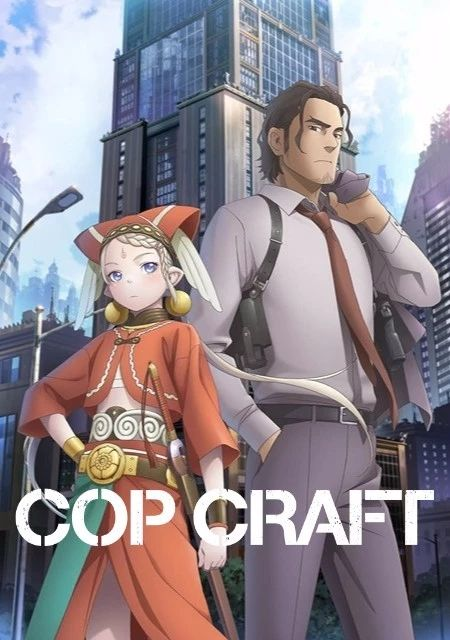
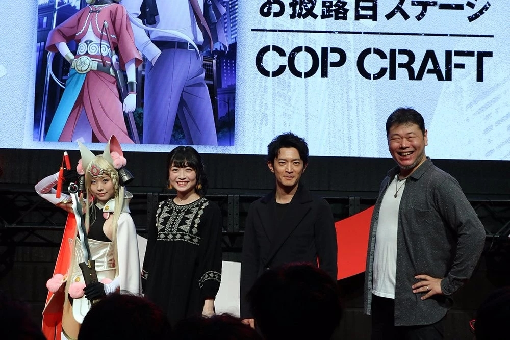

回到首页
奇幻警匪动画《全缉毒狂潮》7月8日开播 片尾曲吉冈茉祐演唱

奇幻警匪动画《全缉毒狂潮》（又名：COP CRAFT）近日公布将于7月8日开播，同时片尾曲将由主角声优吉冈茉祐演唱。
此前，由作家贺东招二、插画家村田莲尔在2009年合作推出的轻小说《全缉毒狂潮》（又名：COP CRAFT）将由《Wake Up, Girls! 新章》幕后的监督&人物设计师板垣伸、木村博美联手Millepensee团队改编为TV动画。此次，动画OP、ED信息，部分角色声优信息和首播信息也一起公开了。

参加 AnimeJapan 2019活动的特别来宾们：くろねこ（Coser）、吉冈茉祐、津田健次郎、贺东招二。
《全缉毒狂潮》故事发生在十五年前，太平洋上出现了一个未知的超空间大门。在门的对面，是妖精和魔物居住的奇妙异世界“莱特·塞玛尼”。
“圣特雷萨市”是有着超过200万的来自两个世界的移民居住的都市。那里有着多样的民族和多彩的文化，有着富裕者和贫困者。那里是全世界最新的“梦幻之城”。
但是，在那混沌的暗影中，涌动着各种各样的犯罪。毒品贩卖、色情交易、武器走私。而面对这些犯罪的刑警们，就存在于圣特雷萨市的警察局……
刑警桂·的场与异世界骑士缇拉娜，性别、性格以及“出生的世界”均不相同的两人相遇之时，案件发生了。两个世界，两种正义，在其前方——搭档警察动作剧开幕！
本动画公布将于7月8日首播，而且官方也邀请到创作歌手大石昌良来演唱OP曲，主角声优吉冈茉祐则是负责ED曲。
大石昌良在之前制作过恋爱喜剧动画《多田君不恋爱》的OPED、插入歌，而且吉冈茉祐的好歌喉也已令粉丝们相当熟悉，看来我们到时候又有好音乐可以享受。
【STAFF】
原作：贺东招二《COP CRAFT: DRAGNET MIRAGE RELOADED》（小学馆《GAGAGA文库》刊）
角色原案：村田莲尔
监督：板垣伸
系列构成：贺东招二
角色设计：木村博美
美术监督：坂上裕文?加藤浩（TOTONYAN）
色彩设计：山上爱子（T.D.I）
摄影监督：大见有正（天狗工房）
编辑：平木大辅（Assez Finaud Fabric）
音乐：岩崎琢
音响监督：乡田穗积
动画制作：Millepensee
【CAST】的场圭：津田健次郎
缇拉娜·艾克泽蒂利卡：吉冈茉祐
塞茜尔·艾普斯：折笠富美子
杰克·罗斯：滨田贤二
托尼·马克比：高桥良辅
亚历山大·戈杜诺夫：鹤冈聪
杰米·奥斯汀：中原麻衣
卡梅伦·埃斯特凡：井上麻里奈
比兹·奥尼尔：高木涉
凯尼：Volcano太田
杰拉达：大冢芳忠
|